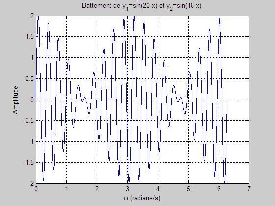

Battement de deux ondes
clear; home; close all % Génère 1000 valeurs équidistantes entre 0 et 2pi. x = linspace(0,2*pi,1000); y1 = sin(20*x); % vectorisation y2 = sin(18*x); % vectorisation y1_et_y2 = y1 + y2; % vectorisation % deltaDegre = 2*pi/(1000-1); % x = zeros(1,1000); % pseudodéclaration % y1_et_y2 = zeros(1,1000); % for i = 1:1000 % x(i) = (i-1)*deltaDegre; % y1 = sin(20*x(i)); % y2 = sin(18*x(i)); % y1_et_y2(i) = y1+y2; % end plot(x,y1_et_y2); title('Battement de y_1=sin(20 x) et y_2=sin(18 x)'); ylabel('Amplitude'); xlabel('\omega (radians/s)'); grid on;
